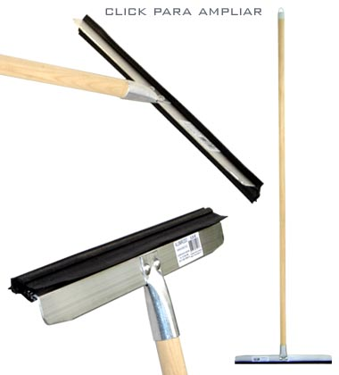

|  | O
Alumirodo de uso doméstico cabo em madeira,
foi especialmente desenvolvido para atender os consumidores que procuram
qualidade e um baixo custo. Trata-se de um produto com um excelente
acabamento e uma matéria prima de qualidade superior. Seu cabo é em
madeira de primeira qualidade(tipo exportação) de 1,35m.
Um cabo maior que é unicamente utilizado visando um maior conforto
de quem manuseia o produto. Na parte inferior do Alumirodo cabo madeira,
o cabo é acoplado a um tubo em alumínio que por sua vez é rebitado
a base, evitando assim molhar a madeira. A base é confeccionada
em duralumínio(alumínio de alta resistência) e
está disponível nos tamanhos de 30, 40 e 50cm. Sua borracha é macia
e de alta qualidade que se molda perfeitamente ao piso, mesmo aos lisos
e irregulares, propiciando assim a secagem completa, dispensando o
pano ou outros adereços de secagem. Foi projetado para que possibilite
a fácil substituição da borracha, que também é fornecida
como refil. |